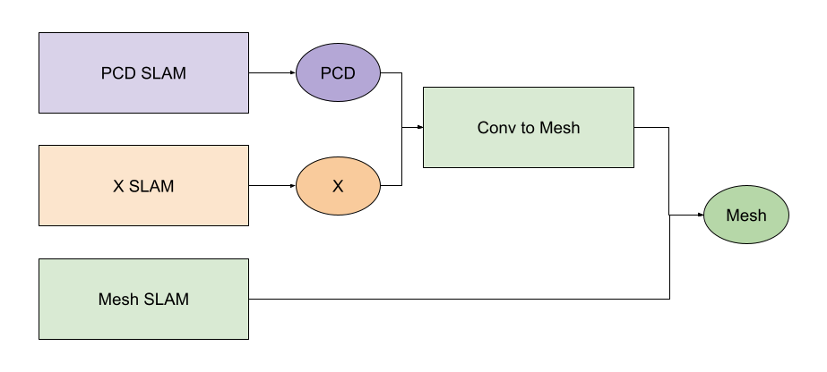
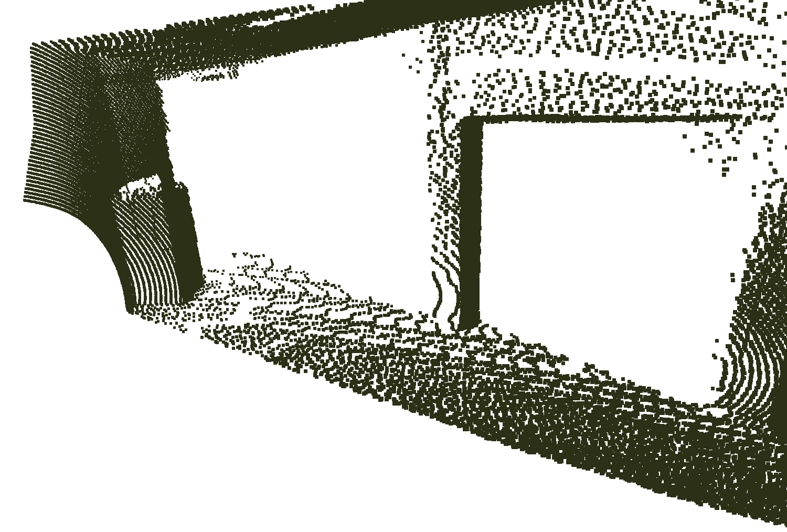
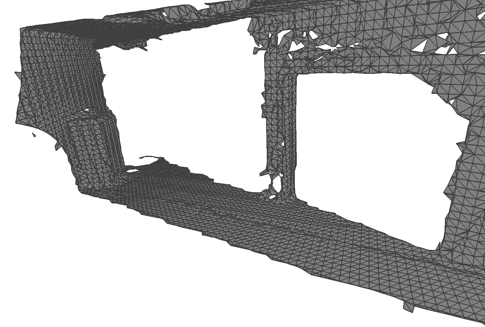
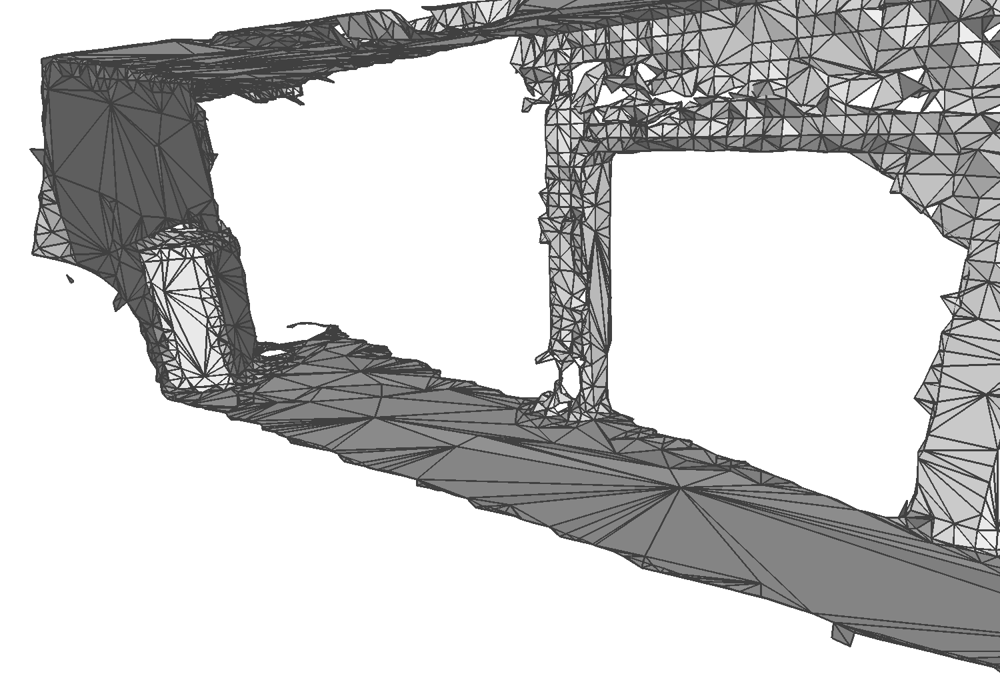

Mesh Mapping
There are many different strategies to mesh your environment. Some of them consist of multiple steps, which gives a greater control about intermediate results. Others generate meshes directly, which makes it faster, but also harder to figure out potential flaws.
Most of those strategies consist of a simultaneous localization and mapping (SLAM) software somewhere in the chain. For simplicity, we distinguish SLAM software by the data structure they operate on and generate as output.
For example, point cloud (PCD) SLAM is a SLAM software that operates on point clouds and generates a large PCD of the environment. There are exceptions, for example voxel-based SLAM often operate on voxel-representations, also producing large voxel-maps as end result, but also producing a mesh as side-product, such as Warpsense. Then we still consider it as voxel-based SLAM and handle the mesh output as if it was before converted from a voxel-based representation to a mesh. So Warpsense, for example, is a voxel-based SLAM and also a mesh conversion tool.
Then, the following procedures are possible to obtain a mesh from your environment, using different SLAM approaches:

List of Helpful Open-Source Software
PCD SLAM
This list will grow.
| Name | Link | MeshNav-proved? |
|---|---|---|
| Point-LIO | https://github.com/hku-mars/Point-LIO | unknown |
| MOLA | https://github.com/MOLAorg/mola | unknown |
| Slam6D | https://slam6d.sourceforge.io/ | yes: Tested with high resulution Riegl scans |
| GLIM | https://github.com/koide3/glim | yes: Guide |
| Open3D | https://www.open3d.org/ | yes: scripts |
The resulting PCD can be used to generate a mesh. See conversion tools.
Voxel-based SLAM
| Name | Link | MeshNav-proved? |
|---|---|---|
| voxblox | https://github.com/ethz-asl/voxblox | unknown |
| nvblox | https://github.com/nvidia-isaac/nvblox | unknown |
| Uni-Fusion | https://github.com/Jarrome/Uni-Fusion | unknown |
Mesh SLAM
| Name | Link | MeshNav-proved? |
|---|---|---|
| Kinect Fusion | https://www.microsoft.com/en-us/research/wp-content/uploads/2016/02/ismar2011.pdf | unknown |
| PUMA | https://github.com/PRBonn/puma | unknown. unconnected mesh? |
| SLAMesh | https://github.com/lab-sun/SLAMesh | unknown |
| Warpsense | https://github.com/juliangaal/warpsense | unknown |
| Kimera | https://github.com/MIT-SPARK/Kimera-VIO | unknown |
Other SLAM
| Name | Link | MeshNav-proved? |
|---|---|---|
| PIN SLAM | https://github.com/PRBonn/PIN_SLAM | unknown. In first test, mesh was corrupted so I couldn't traverse with the lvr2 half-edge mesh. |
| Loopy-SLAM | https://github.com/eriksandstroem/Loopy-SLAM | unknown |
Conversion Tools
It is also possible to convert certain data structures to others. Here a list:
| Name | Link | Comments | MeshNav-proved? |
|---|---|---|---|
| lvr2 | https://github.com/uos/lvr2 | lvr2_reconstruct executable |
yes |
| meshlab | https://www.meshlab.net/ | yes | |
| Open3D | https://www.open3d.org/ | Example Open3D scripts: Link | yes |
LVR2
The lvr2 project has a tool to reconstruct meshes from unordered point clouds:
./bin/lvr2_reconstruct input_pcd.ply
It uses the Marching Cubes algorithm to reconstruct a mesh from the input_pcd.ply and writes the resulting mesh to triangle_mesh.ply.
The results look like this:
| Point Cloud | Triangle Mesh |
|---|---|
|  |  |
The lvr2_reconstruct executable has many useful parameters that can be adjusted for different point cloud sizes, resultions, or environments.
The parameters can be printed as follows:
./bin/lvr2_reconstruct --help
Some important parameters are:
| Parameter | Description |
|---|---|
-v 0.2 |
Voxelsize for the Marching Cubes algorithm. Has to be set to the smallest possible triangle resolution you want to have. |
--kn 5 |
Number of nearest neighbors used for PCD normal computation. This depends on the PCD density and other environmental factors. |
--ki 10 |
Number of nearest neighbors used to interpolate the normals |
--kd 10 |
Number of nearest neighbors of each voxel corner to compute the signed distance values. |
There are more parameters that influence the way lvr2 is reconstructing surfaces from point clouds. My advise is to just test them and see what changes.
Meshlab
MeshLab is an open-source software designed for processing and editing 3D triangular meshes, widely used for reconstructing surfaces from point clouds. It supports various algorithms to convert unstructured point clouds into coherent triangular meshes, such as Poisson surface reconstruction, and Marching Cubes.
Further resources: - "Meshing Point Clouds": https://meshlabstuff.blogspot.com/2009/09/meshing-point-clouds.html
Open3D
Open3D is a versatile open-source library for 3D data processing that provides tools for surface reconstruction from point clouds using methods like Poisson reconstruction and alpha shapes. The following example showcases the usage of the python API to Poission reconstruction to extract surfaces:
import open3d as o3d
import sys
# parameters for normal estimation for each point in PCD
ne_max_radius = 0.1 # choose this dependent on the scale and density of your PCD
ne_max_nn = 30 # choose this dependent on density of your PCD
# parameters for poission reconstruction
possion_depth = 11 # the higher the more details, the more RAM is used
density_filter = 0.05 # filter surface patches with low 'evidence'
# This script reconstructs surfaces from a point cloud using Poisson Surface reconstruction
# using Open3D's API (version 0.18.0)
#
# Input: point cloud -> Output: mesh
if __name__ == '__main__':
file_in = sys.argv[1]
file_out = sys.argv[2]
pcd = o3d.io.read_point_cloud(file_in)
print("Estimating point normals...")
pcd.estimate_normals(search_param=o3d.geometry.KDTreeSearchParamHybrid(radius=ne_max_radius, max_nn=ne_max_nn))
print("Starting Poisson surface reconstruction...")
mesh, densities = o3d.geometry.TriangleMesh.create_from_point_cloud_poisson(pcd, depth=depth)
print("Removing vertices with low Poission density")
vertices_to_remove = densities < np.quantile(densities, density_filter)
mesh.remove_vertices_by_index(np.where(vertices_to_remove)[0])
# Save the mesh
o3d.io.write_triangle_mesh(file_out, mesh)
Further examples can be inferred from the official Open3D documention page: https://www.open3d.org/docs/release/.
Optimization
After we generated a mesh using SLAM approaches, it often has a high resolution; normally, exactly as high as the internal voxel representation. However, we can reduce the number of faces at planar regions, while still describing the environment accurately. This can be done using tools from various mesh editing software, such as Blender or meshlab.
Or you can use the lvr2_mesh_reduce tool from the lvr2 project as follows:
./bin/lvr2_mesh_reduce input_mesh.ply -r 0.6
It reduces the number of faces by a ratio of 0.6 and writes the results to reduced_mesh.ply, which would look as follows:
| Triangle Mesh | Optimized Mesh |
|---|---|
|  |
Warning: For malformed meshes, this tool will result in an PanicException. It's on our list of things that needed to be fixed. If you find a solution to that problem, please contact us.